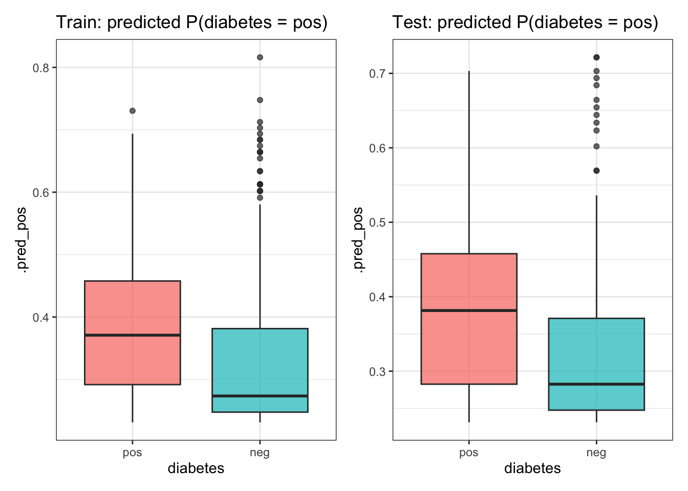

Evaluate Performance in Classification (tidymodels)
We will work with the PimaIndiansDiabetes dataset and:
- split into training and testing sets,
- fit a simple logistic regression model,
- obtain class probabilities and predicted classes using a threshold,
- evaluate performance on train and test,
- visualise score distributions and ROC / AUC,
- then add more features and compare.
# Load the dataset and keep only variables of interest
data("PimaIndiansDiabetes")
pima_small <- PimaIndiansDiabetes %>%
as_tibble() %>%
select(age, glucose, mass, diabetes) %>%
mutate(
diabetes = factor(diabetes), # ensure factor, not 0/1
diabetes = forcats::fct_relevel(diabetes, "pos", "neg")
)
glimpse(pima_small)Rows: 768
Columns: 4
$ age <dbl> 50, 31, 32, 21, 33, 30, 26, 29, 53, 54, 30, 34, 57, 59, 51, 3…
$ glucose <dbl> 148, 85, 183, 89, 137, 116, 78, 115, 197, 125, 110, 168, 139,…
$ mass <dbl> 33.6, 26.6, 23.3, 28.1, 43.1, 25.6, 31.0, 35.3, 30.5, 0.0, 37…
$ diabetes <fct> pos, neg, pos, neg, pos, neg, pos, neg, pos, pos, neg, pos, n…Always key to see number of patients of each type
table(PimaIndiansDiabetes$diabetes)
neg pos
500 268 1. Train / Test Split
We split the data into 70% training and 30% testing.
2. Specify logistic model, recipe and workflow
We start with a very simple model: diabetes ~ age (age-only model).
# Model specification: logistic regression
log_spec <- logistic_reg() %>%
set_engine("glm") %>%
set_mode("classification")
# Recipe: diabetes ~ age
log_rec <- recipe(diabetes ~ age, data = train_data)
# Workflow: model + recipe
log_wf <- workflow() %>%
add_model(log_spec) %>%
add_recipe(log_rec)
log_wf══ Workflow ════════════════════════════════════════════════════════════════════
Preprocessor: Recipe
Model: logistic_reg()
── Preprocessor ────────────────────────────────────────────────────────────────
0 Recipe Steps
── Model ───────────────────────────────────────────────────────────────────────
Logistic Regression Model Specification (classification)
Computational engine: glm 3. Fit the model on the training data
log_fit <- log_wf %>%
fit(data = train_data)
log_fit══ Workflow [trained] ══════════════════════════════════════════════════════════
Preprocessor: Recipe
Model: logistic_reg()
── Preprocessor ────────────────────────────────────────────────────────────────
0 Recipe Steps
── Model ───────────────────────────────────────────────────────────────────────
Call: stats::glm(formula = ..y ~ ., family = stats::binomial, data = data)
Coefficients:
(Intercept) age
2.14315 -0.04486
Degrees of Freedom: 536 Total (i.e. Null); 535 Residual
Null Deviance: 694.2
Residual Deviance: 660.8 AIC: 664.8If we want to see the underlying glm coefficients:
4. Predicted probabilities and classes (threshold 0.5)
In classification, the model first outputs class probabilities. To turn these into classes we must choose a decision threshold (default 0.5).
We’ll:
- get probabilities for the positive class
"pos", - then create a predicted class using a threshold of 0.5.
4.1 Training predictions
# Probabilities on train
train_preds <- predict(log_fit, train_data, type = "prob") %>%
bind_cols(train_data)
head(train_preds)# A tibble: 6 × 6
.pred_pos .pred_neg age glucose mass diabetes
<dbl> <dbl> <dbl> <dbl> <dbl> <fct>
1 0.231 0.769 21 89 28.1 neg
2 0.301 0.699 29 115 35.3 neg
3 0.311 0.689 30 110 37.6 neg
4 0.340 0.660 33 103 43.3 neg
5 0.239 0.761 22 97 23.2 neg
6 0.602 0.398 57 145 22.2 neg The .pred_pos column is the estimated probability of "pos" (diabetes present).
Now create predicted classes:
train_preds <- train_preds %>%
mutate(
pred_class = if_else(.pred_pos > 0.5, "pos", "neg"),
pred_class = factor(pred_class, levels = levels(diabetes))
)
head(train_preds)# A tibble: 6 × 7
.pred_pos .pred_neg age glucose mass diabetes pred_class
<dbl> <dbl> <dbl> <dbl> <dbl> <fct> <fct>
1 0.231 0.769 21 89 28.1 neg neg
2 0.301 0.699 29 115 35.3 neg neg
3 0.311 0.689 30 110 37.6 neg neg
4 0.340 0.660 33 103 43.3 neg neg
5 0.239 0.761 22 97 23.2 neg neg
6 0.602 0.398 57 145 22.2 neg pos 4.2 Testing predictions
test_preds <- predict(log_fit, test_data, type = "prob") %>%
bind_cols(test_data) %>%
mutate(
pred_class = if_else(.pred_pos > 0.5, "pos", "neg"),
pred_class = factor(pred_class, levels = levels(diabetes))
)
head(test_preds)# A tibble: 6 × 7
.pred_pos .pred_neg age glucose mass diabetes pred_class
<dbl> <dbl> <dbl> <dbl> <dbl> <fct> <fct>
1 0.525 0.475 50 148 33.6 pos pos
2 0.320 0.680 31 85 26.6 neg neg
3 0.330 0.670 32 183 23.3 pos neg
4 0.311 0.689 30 116 25.6 neg neg
5 0.602 0.398 57 139 27.1 neg pos
6 0.536 0.464 51 166 25.8 pos pos 5. Evaluate performance with tidymodels metrics
We can use yardstick via metric_set() to compute several metrics at once.
class_metrics <- yardstick::metric_set(
yardstick::accuracy,
yardstick::precision,
yardstick::recall,
yardstick::sens,
yardstick::specificity
)5.1 Training performance
train_metrics <- train_preds %>%
class_metrics(truth = diabetes, estimate = pred_class)
train_metrics# A tibble: 5 × 3
.metric .estimator .estimate
<chr> <chr> <dbl>
1 accuracy binary 0.650
2 precision binary 0.493
3 recall binary 0.182
4 sens binary 0.182
5 specificity binary 0.9 5.2 Testing performance
test_metrics <- test_preds %>%
class_metrics(truth = diabetes, estimate = pred_class)
test_metrics# A tibble: 5 × 3
.metric .estimator .estimate
<chr> <chr> <dbl>
1 accuracy binary 0.632
2 precision binary 0.433
3 recall binary 0.160
4 sens binary 0.160
5 specificity binary 0.887We see that:
- Train and test performance are similar (no strong sign of overfitting),
- Overall values are not very high (this simple model underfits – age alone is not enough).
6. Visualising the score distributions
We can visualise the predicted probabilities by true class in train and test.
Train_plot <- ggplot(train_preds, aes(x = diabetes, y = .pred_pos, fill = diabetes)) +
geom_boxplot(alpha = 0.7) +
labs(title = "Train: predicted P(diabetes = pos)") +
theme_bw() +
theme(legend.position = "none")
Test_plot <- ggplot(test_preds, aes(x = diabetes, y = .pred_pos, fill = diabetes)) +
geom_boxplot(alpha = 0.7) +
labs(title = "Test: predicted P(diabetes = pos)") +
theme_bw() +
theme(legend.position = "none")
Train_plot + Test_plot
7. ROC curve and AUC (test set)
We now look at the ROC curve and compute the AUC for the age-only model on the test set.
# ROC curve and AUC for age-only model (test set)
roc_age <- roc_curve(test_preds, truth = diabetes, .pred_pos)
auc_age <- roc_auc(test_preds, truth = diabetes, .pred_pos)
auc_age# A tibble: 1 × 3
.metric .estimator .estimate
<chr> <chr> <dbl>
1 roc_auc binary 0.658Include more features
So far we used only age. We now include additional predictors to see if performance improves.
pima_big <- PimaIndiansDiabetes %>%
mutate(
diabetes = factor(diabetes), # ensure factor, not 0/1
diabetes = forcats::fct_relevel(diabetes, "pos", "neg")
)We’ll now work with the full dataset and split again.
set.seed(123)
data_split2 <- initial_split(pima_big, prop = 0.7, strata = diabetes)
train_data2 <- training(data_split2)
test_data2 <- testing(data_split2)
dim(train_data2)[1] 537 9dim(test_data2)[1] 231 91. New recipe with more features
We include multiple predictors in our recipe and also add simple preprocessing (e.g. median imputation and normalisation):
# Model specification stays the same
log_spec2 <- logistic_reg() %>%
set_engine("glm") %>%
set_mode("classification")
# Recipe with more predictors
log_rec2 <- recipe(diabetes ~ age + pressure + triceps + mass + insulin,
data = train_data2) %>%
step_impute_median(all_numeric_predictors()) %>%
step_normalize(all_numeric_predictors())
log_rec2── Recipe ──────────────────────────────────────────────────────────────────────── Inputs Number of variables by roleoutcome: 1
predictor: 5── Operations • Median imputation for: all_numeric_predictors()• Centering and scaling for: all_numeric_predictors()Create the workflow and fit on training data:
log_wf2 <- workflow() %>%
add_model(log_spec2) %>%
add_recipe(log_rec2)
log_fit2 <- log_wf2 %>%
fit(data = train_data2)
log_fit2══ Workflow [trained] ══════════════════════════════════════════════════════════
Preprocessor: Recipe
Model: logistic_reg()
── Preprocessor ────────────────────────────────────────────────────────────────
2 Recipe Steps
• step_impute_median()
• step_normalize()
── Model ───────────────────────────────────────────────────────────────────────
Call: stats::glm(formula = ..y ~ ., family = stats::binomial, data = data)
Coefficients:
(Intercept) age pressure triceps mass insulin
0.7674 -0.5977 0.2135 0.2071 -0.8688 -0.3736
Degrees of Freedom: 536 Total (i.e. Null); 531 Residual
Null Deviance: 694.2
Residual Deviance: 592.3 AIC: 604.3Look at the coefficients:
# A tibble: 6 × 5
term estimate std.error statistic p.value
<chr> <dbl> <dbl> <dbl> <dbl>
1 (Intercept) 0.767 0.104 7.39 1.45e-13
2 age -0.598 0.105 -5.70 1.19e- 8
3 pressure 0.214 0.111 1.92 5.46e- 2
4 triceps 0.207 0.120 1.73 8.38e- 2
5 mass -0.869 0.132 -6.60 4.17e-11
6 insulin -0.374 0.115 -3.24 1.20e- 32. Predictions and performance (train & test)
train_preds2 <- predict(log_fit2, train_data2, type = "prob") %>%
bind_cols(train_data2) %>%
mutate(
pred_class = if_else(.pred_pos > 0.5, "pos", "neg"),
pred_class = factor(pred_class, levels = levels(diabetes))
)
test_preds2 <- predict(log_fit2, test_data2, type = "prob") %>%
bind_cols(test_data2) %>%
mutate(
pred_class = if_else(.pred_pos > 0.5, "pos", "neg"),
pred_class = factor(pred_class, levels = levels(diabetes))
)Train metrics
train_preds2 %>%
class_metrics(truth = diabetes, estimate = pred_class)# A tibble: 5 × 3
.metric .estimator .estimate
<chr> <chr> <dbl>
1 accuracy binary 0.696
2 precision binary 0.602
3 recall binary 0.380
4 sens binary 0.380
5 specificity binary 0.866Test metrics
test_preds2 %>%
class_metrics(truth = diabetes, estimate = pred_class)# A tibble: 5 × 3
.metric .estimator .estimate
<chr> <chr> <dbl>
1 accuracy binary 0.667
2 precision binary 0.548
3 recall binary 0.284
4 sens binary 0.284
5 specificity binary 0.8733. ROC curve and AUC for the richer model (test set)
roc_rich <- roc_curve(test_preds2, truth = diabetes, .pred_pos)
auc_rich <- roc_auc(test_preds2, truth = diabetes, .pred_pos)
auc_rich# A tibble: 1 × 3
.metric .estimator .estimate
<chr> <chr> <dbl>
1 roc_auc binary 0.715You should observe:
- A higher AUC compared to the age-only model,
- A ROC curve that is further from the diagonal.
You will learn more about AUC and AUROC on Friday, but here is a very good visual of its meaning: https://mlu-explain.github.io/roc-auc/
Key things to understand
-
Dataset splitting (train vs test) is crucial to assess generalisation.
- We fit the model only on the training data.
- We then evaluate performance on both train and test to detect:
- overfitting (train ≪ test error),
- underfitting (both high and similar),
- good generalisation (both low and similar).
- In classification, we:
- work with probabilities first,
- choose a threshold to define predicted classes,
- use metrics such as accuracy, precision, recall, sensitivity, specificity, etc.,
- and use ROC curves and AUC to summarise performance across all thresholds.
- Adding more relevant features can improve performance, but we still need to watch for overfitting in more flexible models.